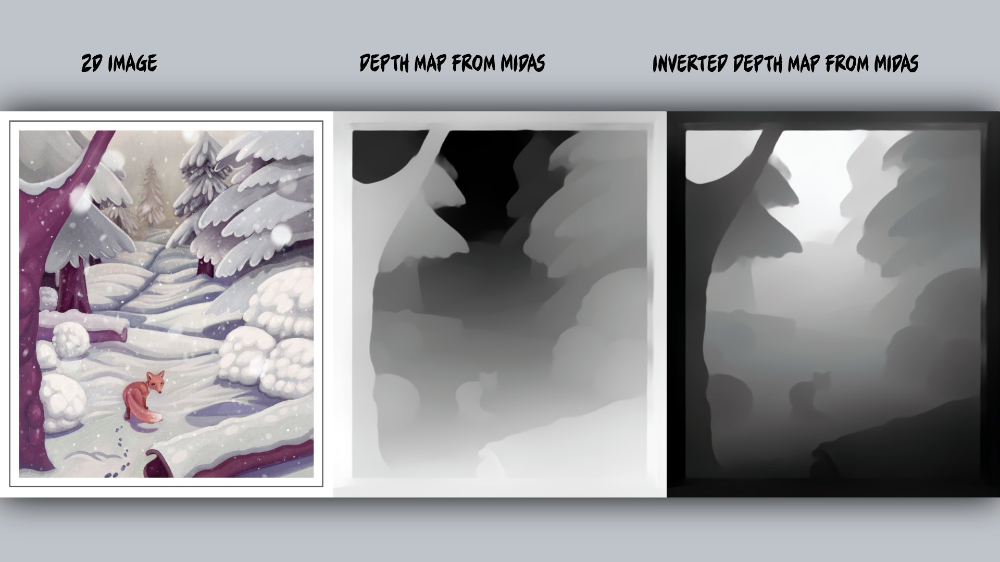
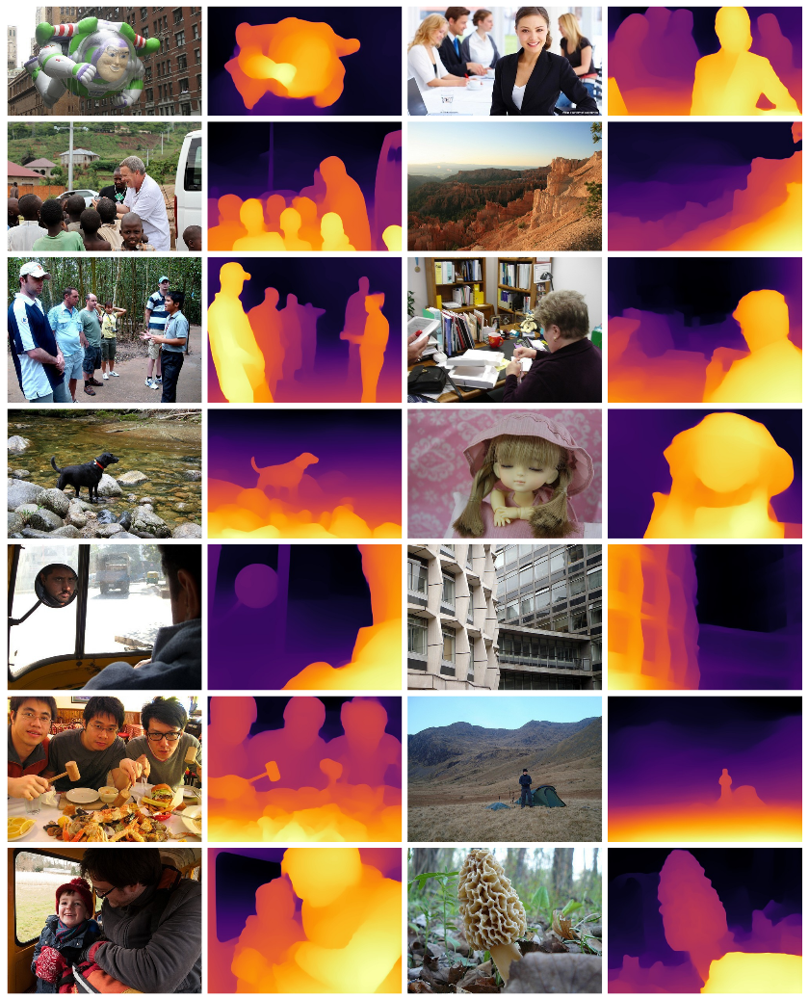

In the realm of computer graphics, achieving realistic textures and surfaces is paramount. Parallax Occlusion Mapping
(POM) has long been a favorite technique to simulate 3D details on 2D surfaces. But what if we could enhance this with
the power of AI? Enter MIDAS, a state-of-the-art tool for depth map prediction.
Understanding Parallax Occlusion Mapping (POM)
POM is a technique that simulates the appearance of depth on a 2D texture. It works by altering the texture coordinates
based on the viewer's perspective and a height map, giving the illusion of 3D depth. This is especially useful for
surfaces with intricate details that would be computationally expensive to model in 3D.

MIDAS: The Power of AI in Depth Map Prediction
MIDAS, which stands for Mi-Depth Inference System, is a deep learning model trained to predict depth maps from 2D
images. Unlike traditional methods, MIDAS can generate depth maps with remarkable accuracy and detail. This is
achieved by training the model on a vast dataset of images with corresponding depth maps, allowing it to generalize
and predict depth for new, unseen images.
Combining POM with MIDAS
By integrating POM with AI-generated depth maps from MIDAS, we can achieve:
- Enhanced Realism: The depth maps generated by MIDAS provide a higher level of detail, making the POM effect more pronounced and realistic.
- Efficiency: Instead of manually creating height maps for POM, MIDAS can automatically generate them, saving time and effort.
- Dynamic Depth Generation: For dynamic scenes or those with changing textures, MIDAS can generate depth maps on-the-fly, allowing for real-time POM effects.
Implementation Steps
- Preparation: Obtain the 2D texture for which you want to apply the POM effect.
- Efficiency: Use MIDAS to generate a depth map for the texture.
- Dynamic Depth Generation: Integrate the depth map with your rendering engine to apply the POM effect based on the AI-generated depth map.
Conclusion
The fusion of traditional graphics techniques like POM with cutting-edge AI tools like MIDAS opens up new horizons in
the world of computer graphics. By automating and enhancing processes, we can achieve greater realism and efficiency
in our digital creations.